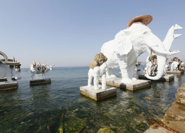

Propuesta 0
Arte Visual Latinoamericano Contemporáneo - Catalina Ferrara
Página
Discusión
Editar
Más
título
Arte Visual Latinoamericano Contemporáneo - Paula Lopez
tipo de proyecto
Proyecto de curso
palabras clave
arte, latam
período
2
asignaturas
Presentación
del curso
Presentación 2024
carrera
Diseño
alumnos
Catalina Ferrara
profesor
Ignacio Bauer
Introducción
En la última década, el arte visual latinoamericano ha experimentado un notable crecimiento, con una nueva generación de artistas que está explorando una amplia gama de temas contemporáneos y desafiando las normas tradicionales. Estos creadores están transformando la escena artística local y ganando reconocimiento a nivel internacional. Desde instalaciones interactivas hasta pintura y escultura, su trabajo refleja una conexión con las raíces culturales de la región y aborda problemáticas sociales actuales.
Este artículo presenta una selección de artistas visuales latinoamericanos contemporáneos, sus enfoques artísticos y las temáticas recurrentes que abordan en sus obras. Además, se enumeran algunas de sus piezas más conocidas, proporcionando una visión general de su impacto en el mundo del arte.
Artistas destacados
Artistas
- Tania Bruguera
- Reconocida por sus performances e instalaciones.
- Su obra se centra en la política y los derechos humanos.
- Adrián Villar Rojas
- Artista multidisciplinario que trabaja con escultura, pintura y video.
- Su obra explora la relación entre el tiempo, la naturaleza y la humanidad.
- Beatriz Milhazes
- Pintora brasileña que combina elementos del modernismo con la cultura popular latinoamericana.
- Su estilo es caracterizado por un uso vibrante del color y patrones complejos.
- Guillermo Kuitca
- Conocido por sus pinturas abstractas que exploran la representación del espacio.
- Su obra frecuentemente incluye referencias a mapas y planos arquitectónicos.
Temáticas recurrentes
- Identidad cultural: Muchos artistas abordan temas relacionados con la identidad cultural, explorando sus raíces y cómo estas influencian su trabajo.
- Política y derechos humanos: La obra de varios artistas refleja una preocupación por los conflictos políticos y las luchas por los derechos humanos en sus respectivos países.
- Naturaleza y medio ambiente: Algunos artistas exploran la relación entre la humanidad y la naturaleza, destacando los efectos del cambio climático y la degradación ambiental.
- Memoria y historia: Temas relacionados con la memoria colectiva y la historia son recurrentes, particularmente en regiones marcadas por conflictos y cambios sociales profundos.
Obras destacadas
Tania Bruguera: “Tatlin’s Whisper #6”
Esta performance aborda la censura y la libertad de expresión.
Adrián Villar Rojas: “The Most Beautiful of All Mothers”
Una instalación que explora el paso del tiempo y la fragilidad de la naturaleza.
Adrián Villar Rojas: “The Most Beautiful of All Mothers” - 01

Adrián Villar Rojas: “The Most Beautiful of All Mothers” - 02
Adrián Villar Rojas: “The Most Beautiful of All Mothers” - 03
Adrián Villar Rojas: “The Most Beautiful of All Mothers” - 04
Adrián Villar Rojas: “The Most Beautiful of All Mothers” - 05
Beatriz Milhazes: “O Mágico”
Pintura que combina elementos geométricos y orgánicos con un uso intenso del color.
Guillermo Kuitca: “Theatre Collages”
¿Quién es?
Guillermo Kuitca es un artista argentino conocido por explorar el espacio a través de la pintura. En su serie “Theatre Collages”, utiliza planos de teatros y auditorios, transformándolos en composiciones abstractas. Estas obras combinan la arquitectura con la abstracción, donde los diagramas de los espacios escénicos se deconstruyen y reorganizan.
¿De qué trata?
La serie se caracteriza por una paleta de colores sobrios y una atmósfera que mezcla lo gráfico con lo pictórico. Kuitca convierte los planos teatrales, normalmente funcionales, en símbolos de lo intangible, como la memoria y el vacío, invitando al espectador a reflexionar sobre la relación entre el espacio y la audiencia.
Puedes ver su obra aquí.
Cierre
El arte visual contemporáneo en América Latina refleja una rica diversidad de temas y enfoques, mostrando cómo los artistas de la región utilizan sus obras para dialogar con el pasado, el presente y el futuro. A medida que estos artistas continúan ganando reconocimiento, sus trabajos se convierten en una parte integral de la narrativa global del arte, ofreciendo nuevas perspectivas y desafiando las percepciones existentes.